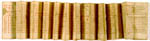

Kalender en gebeden. Kerkslavisch. Handschrift op perkament. Zeven (van de oorspronkelijk acht) aaneengeplakte stroken, breed 120 mm, die samen 3790 mm lang zijn, harmonikagewijs gevouwen en aldus onderverdeeld in halve pagina’s; formaat van de volle pagina: 120 x 90 mm. Noordwest-Rusland, vermoedelijk 1331-1332. -- (SCA 38 B
Formaat en wijze van vouwen leiden tot een goed vanuit één hand te lezen boekje. De inhoud maakt plausibel dat deze exceptionele vorm juist vanwege de gemakkelijke hanteerbaarheid gekozen is. Een gefundeerd oordeel daarover is echter niet goed mogelijk omdat er nauwelijks vergelijkingsmateriaal bewaard lijkt. In West-Europa was deze boekvorm, voorzover wij weten, onbekend, terwijl uit de Oosterse kerk alleen dit exemplaar bewaard zou zijn. Merkwaardigerwijze zijn er wel koptische handschriften van dit type bewaard. Naar de functie is het type te vergelijken met de almanak die als nummer 64 is beschreven.
Literatuur
- W.R. Veder, ‘Leporello (not from ‘Don Giovanni’)’, in: Codex in context. Studies over codicologie, kartuizergeschiedenis en laatmiddeleeuws geestesleven, aangeboden aan A. Gruijs. Nijmegen [etc.] 1985 (= Nijmeegse codicologische cahiers. 4-6), p. 313-317.
| vorige pagina | top pagina |